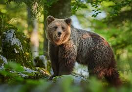

Pragozd je gozd, kjer ni prisotnosti človeka.
V Evropi so pragozdovi stari okoli 10 000 let, kar pomeni, da so se pojavili ob koncu ledene dobe.
Pragozdove delimo glede na geografsko - klimatske značilnosti na več vrst.
Najbolj poznana vrsta so tropski deževni gozdovi v tropskih področjih in zmerni pragozdovi (skandinavski, evropski in pragozdovi zmernih območij.
Z imenom džungla se označuje tropski deževni gozd.
Pragozdov imamo v Sloveniji več.
So majhni po površini, vendar je v njih ohranjena prvobitna narava.
Kočevski pragozdovi se nahajajo na pobočjih Goteniške gore, Postojne in Roga.
Zavarovani ostanki so:
Vsi pragozdovi v Sloveniji skupaj obsegajo okoli 540 hektarov.
Prilagojeni so:
Če vas zanima kaj več, si preberite: